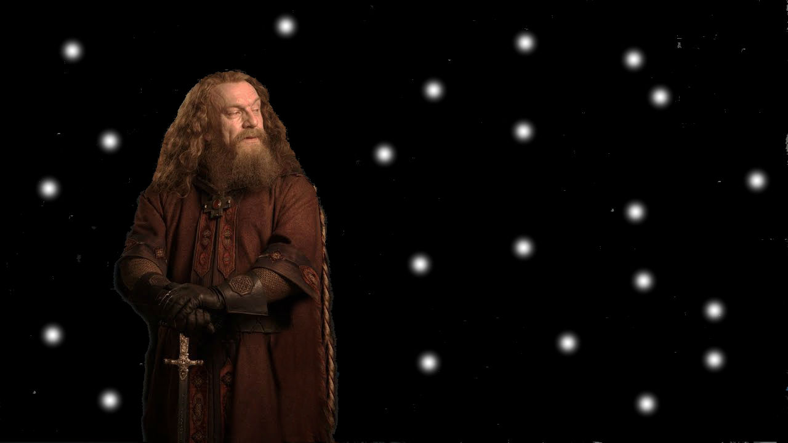

Dumbledore is the headmaster of Hogwarts, who does his best to show all the students capable of using magic the world of spells and mystical things, with the help of the staff and friends.

Minerva was the head of the Gryffindor house, she is also the professor in charge of the transfiguration class.

Harry Potter is the boy who lived, singled out by Lord Voldemort at birth to be his greatest rival, and our hero.

Hermione Granger is one of the smartest students at Hogwarts and unexpectedly makes friends with Ron and Harry.

Ron Weasly is a clumsy wizard and isn't the bravest but he sets out on an adventure with both Harry and Hermione.

Hagrid is a dear friend of Harry, Hermione, and Ron. He helps them with spells and occasionally gets them out of trouble.

Godric is the founder of Gryffindor and Hogwarts, along with 3 other powerful wizards and witches.